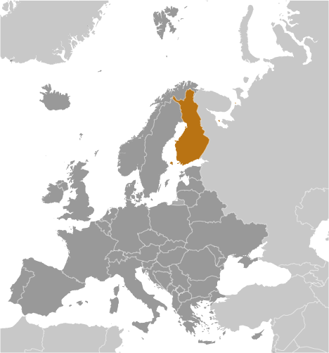
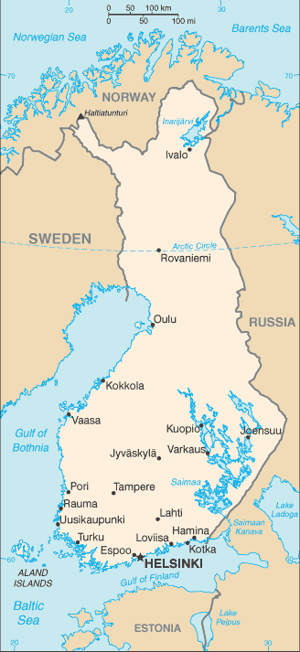
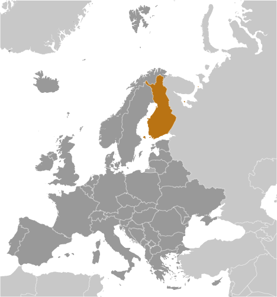
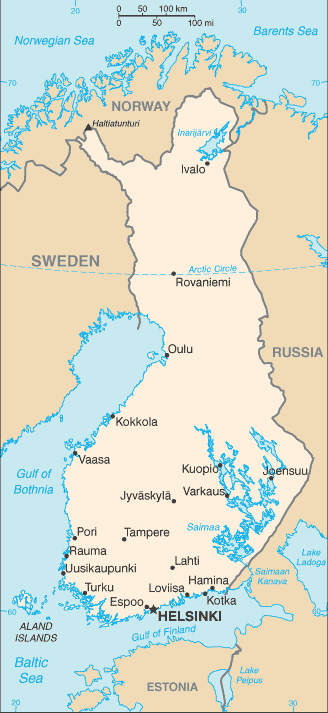

-
Introduction :: Finland
-
Background:Finland was a province and then a grand duchy under Sweden from the 12th to the 19th centuries, and an autonomous grand duchy of Russia after 1809. It gained complete independence in 1917. During World War II, Finland successfully defended its independence through cooperation with Germany and resisted subsequent invasions by the Soviet Union - albeit with some loss of territory. In the subsequent half century, Finland transformed from a farm/forest economy to a diversified modern industrial economy; per capita income is among the highest in Western Europe. A member of the EU since 1995, Finland was the only Nordic state to join the euro single currency at its initiation in January 1999. In the 21st century, the key features of Finland's modern welfare state are high quality education, promotion of equality, and a national social welfare system - currently challenged by an aging population and the fluctuations of an export-driven economy.
-
Geography :: Finland
-
Location:Northern Europe, bordering the Baltic Sea, Gulf of Bothnia, and Gulf of Finland, between Sweden and RussiaGeographic coordinates:64 00 N, 26 00 EMap references:EuropeArea:total: 338,145 sq kmland: 303,815 sq kmwater: 34,330 sq kmcountry comparison to the world: 66Area - comparative:slightly more than two times the size of Georgia; slightly smaller than MontanaLand boundaries:total: 2,563 kmborder countries (3): Norway 709 km, Sweden 545 km, Russia 1309 kmCoastline:1,250 kmMaritime claims:territorial sea: 12 nm (in the Gulf of Finland - 3 nm)contiguous zone: 24 nmcontinental shelf: 200 m depth or to the depth of exploitationexclusive fishing zone: 12 nm; extends to continental shelf boundary with Sweden, Estonia, and RussiaClimate:cold temperate; potentially subarctic but comparatively mild because of moderating influence of the North Atlantic Current, Baltic Sea, and more than 60,000 lakesTerrain:mostly low, flat to rolling plains interspersed with lakes and low hillsElevation:mean elevation: 164 melevation extremes: 0 m lowest point: Baltic Sea1328 highest point: Halti (alternatively Haltia, Haltitunturi, Haltiatunturi)Natural resources:timber, iron ore, copper, lead, zinc, chromite, nickel, gold, silver, limestoneLand use:agricultural land: 7.5% (2011 est.)arable land: 7.4% (2011 est.) / permanent crops: 0% (2011 est.) / permanent pasture: 0.1% (2011 est.)forest: 72.9% (2011 est.)other: 19.6% (2011 est.)Irrigated land:690 sq km (2012)Population distribution:the vast majority of people are found in the south; the northern interior areas remain sparsely poplulatedNatural hazards:severe winters in the northEnvironment - current issues:limited air pollution in urban centers; some water pollution from industrial wastes, agricultural chemicals; habitat loss threatens wildlife populationsEnvironment - international agreements:party to: Air Pollution, Air Pollution-Nitrogen Oxides, Air Pollution-Persistent Organic Pollutants, Air Pollution-Sulfur 85, Air Pollution-Sulfur 94, Air Pollution-Volatile Organic Compounds, Antarctic-Environmental Protocol, Antarctic-Marine Living Resources, Antarctic Treaty, Biodiversity, Climate Change, Climate Change-Kyoto Protocol, Desertification, Endangered Species, Environmental Modification, Hazardous Wastes, Law of the Sea, Marine Dumping, Marine Life Conservation, Ozone Layer Protection, Ship Pollution, Tropical Timber 83, Tropical Timber 94, Wetlands, Whalingsigned, but not ratified: none of the selected agreementsGeography - note:long boundary with Russia; Helsinki is northernmost national capital on European continent; population concentrated on small southwestern coastal plain
-
People and Society :: Finland
-
Population:5,537,364 (July 2018 est.)country comparison to the world: 117Nationality:noun: Finn(s)adjective: FinnishEthnic groups:Finn, Swede, Russian, Estonian, Romani, SamiLanguages:Finnish (official) 87.9%, Swedish (official) 5.2%, Russian 1.4%, other 5.5% (2017 est.)Religions:Lutheran 70.9%, Greek Orthodox 1.1%, other 1.7%, unspecified 26.3% (2017 est.)Age structure:0-14 years: 16.44% (male 465,298 /female 445,186)15-24 years: 11.21% (male 317,500 /female 303,326)25-54 years: 37.64% (male 1,064,751 /female 1,019,748)55-64 years: 13.19% (male 359,434 /female 370,993)65 years and over: 21.51% (male 519,775 /female 671,353) (2018 est.)population pyramid:
 The World Factbook Field Image ModalEurope :: Finland Print
The World Factbook Field Image ModalEurope :: Finland Print Image DescriptionThis is the population pyramid for Finland. A population pyramid illustrates the age and sex structure of a country's population and may provide insights about political and social stability, as well as economic development. The population is distributed along the horizontal axis, with males shown on the left and females on the right. The male and female populations are broken down into 5-year age groups represented as horizontal bars along the vertical axis, with the youngest age groups at the bottom and the oldest at the top. The shape of the population pyramid gradually evolves over time based on fertility, mortality, and international migration trends.
Image DescriptionThis is the population pyramid for Finland. A population pyramid illustrates the age and sex structure of a country's population and may provide insights about political and social stability, as well as economic development. The population is distributed along the horizontal axis, with males shown on the left and females on the right. The male and female populations are broken down into 5-year age groups represented as horizontal bars along the vertical axis, with the youngest age groups at the bottom and the oldest at the top. The shape of the population pyramid gradually evolves over time based on fertility, mortality, and international migration trends.
For additional information, please see the entry for Population pyramid on the Definitions and Notes page under the References tab.Dependency ratios:total dependency ratio: 57.9 (2015 est.)youth dependency ratio: 25.9 (2015 est.)elderly dependency ratio: 32 (2015 est.)potential support ratio: 3.1 (2015 est.)Median age:total: 42.6 yearsmale: 41 yearsfemale: 44.3 years (2018 est.)country comparison to the world: 27Population growth rate:0.33% (2018 est.)country comparison to the world: 167Birth rate:10.7 births/1,000 population (2018 est.)country comparison to the world: 183Death rate:10.1 deaths/1,000 population (2018 est.)country comparison to the world: 35Net migration rate:2.9 migrant(s)/1,000 population (2017 est.)country comparison to the world: 35Population distribution:the vast majority of people are found in the south; the northern interior areas remain sparsely poplulatedUrbanization:urban population: 85.4% of total population (2018)rate of urbanization: 0.42% annual rate of change (2015-20 est.)Major urban areas - population:1.279 million HELSINKI (capital) (2018)Sex ratio:at birth: 1.05 male(s)/female (2017 est.)0-14 years: 1.05 male(s)/female (2017 est.)15-24 years: 1.04 male(s)/female (2017 est.)25-54 years: 1.04 male(s)/female (2017 est.)55-64 years: 0.97 male(s)/female (2017 est.)65 years and over: 0.76 male(s)/female (2017 est.)total population: 0.97 male(s)/female (2017 est.)Mother's mean age at first birth:28.8 years (2015 est.)Maternal mortality rate:3 deaths/100,000 live births (2015 est.)country comparison to the world: 181Infant mortality rate:total: 2.5 deaths/1,000 live births (2018 est.)male: 2.7 deaths/1,000 live births (2018 est.)female: 2.4 deaths/1,000 live births (2018 est.)country comparison to the world: 218Life expectancy at birth:total population: 81.1 years (2018 est.)male: 78.1 years (2018 est.)female: 84.2 years (2018 est.)country comparison to the world: 33Total fertility rate:1.75 children born/woman (2018 est.)country comparison to the world: 160Contraceptive prevalence rate:85.5% (2015)note: percent of women aged 18-49
Health expenditures:9.7% of GDP (2014)country comparison to the world: 27Physicians density:3.2 physicians/1,000 population (2014)Hospital bed density:4.4 beds/1,000 population (2015)Drinking water source:improved: urban: 100% of populationrural: 100% of populationtotal: 100% of populationunimproved: urban: 0% of populationrural: 0% of populationtotal: 0% of population (2015 est.)Sanitation facility access:improved: urban: 99.4% of population (2015 est.)rural: 88% of population (2015 est.)total: 97.6% of population (2015 est.)unimproved: urban: 0.6% of population (2015 est.)rural: 12% of population (2015 est.)total: 2.4% of population (2015 est.)HIV/AIDS - adult prevalence rate:NAHIV/AIDS - people living with HIV/AIDS:NAHIV/AIDS - deaths:NAObesity - adult prevalence rate:22.2% (2016)country comparison to the world: 80Education expenditures:7.2% of GDP (2014)country comparison to the world: 17School life expectancy (primary to tertiary education):total: 19 years (2015)male: 19 years (2015)female: 20 years (2015)Unemployment, youth ages 15-24:total: 20.1% (2016 est.)male: 21.8% (2016 est.)female: 18.6% (2016 est.)country comparison to the world: 65 -
Government :: Finland
-
Country name:conventional long form: Republic of Finlandconventional short form: Finlandlocal long form: Suomen tasavalta/Republiken Finlandlocal short form: Suomi/Finlandetymology: name may derive from the ancient Fenni peoples who are first described as living in northeastern Europe in the first centuries A.D.Government type:parliamentary republicCapital:name: Helsinkigeographic coordinates: 60 10 N, 24 56 Etime difference: UTC+2 (7 hours ahead of Washington, DC, during Standard Time)daylight saving time: +1hr, begins last Sunday in March; ends last Sunday in OctoberAdministrative divisions:19 regions (maakunnat, singular - maakunta (Finnish); landskapen, singular - landskapet (Swedish)); Aland (Swedish), Ahvenanmaa (Finnish); Etela-Karjala (Finnish), Sodra Karelen (Swedish) [South Karelia]; Etela-Pohjanmaa (Finnish), Sodra Osterbotten (Swedish) [South Ostrobothnia]; Etela-Savo (Finnish), Sodra Savolax (Swedish) [South Savo]; Kanta-Hame (Finnish), Egentliga Tavastland (Swedish); Kainuu (Finnish), Kajanaland (Swedish); Keski-Pohjanmaa (Finnish), Mellersta Osterbotten (Swedish) [Central Ostrobothnia]; Keski-Suomi (Finnish), Mellersta Finland (Swedish) [Central Finland]; Kymenlaakso (Finnish), Kymmenedalen (Swedish); Lappi (Finnish), Lappland (Swedish); Paijat-Hame (Finnish), Paijanne-Tavastland (Swedish); Pirkanmaa (Finnish), Birkaland (Swedish) [Tampere]; Pohjanmaa (Finnish), Osterbotten (Swedish) [Ostrobothnia]; Pohjois-Karjala (Finnish), Norra Karelen (Swedish) [North Karelia]; Pohjois-Pohjanmaa (Finnish), Norra Osterbotten (Swedish) [North Ostrobothnia]; Pohjois-Savo (Finnish), Norra Savolax (Swedish) [North Savo]; Satakunta (Finnish and Swedish); Uusimaa (Finnish), Nyland (Swedish) [Newland]; Varsinais-Suomi (Finnish), Egentliga Finland (Swedish) [Southwest Finland]Independence:6 December 1917 (from Russia)National holiday:Independence Day, 6 December (1917)Constitution:history: previous 1906, 1919; latest drafted 17 June 1997, approved by Parliament 11 June 1999, entered into force 1 March 2000 (2016)amendments: proposed by Parliament; passage normally requires simple majority vote in two readings in the first parliamentary session and at least two-thirds majority vote in a single reading by the newly elected Parliament; proposals declared "urgent" by five-sixths of Parliament members can be passed by at least two-thirds majority vote in the first parliamentary session only; amended several times, last in 2012 (2016)Legal system:civil law system based on the Swedish modelInternational law organization participation:accepts compulsory ICJ jurisdiction with reservations; accepts ICCt jurisdictionCitizenship:citizenship by birth: nocitizenship by descent only: at least one parent must be a citizen of Finlanddual citizenship recognized: yesresidency requirement for naturalization: 6 yearsSuffrage:18 years of age; universalJudicial branch:highest courts: Supreme Court or Korkein Oikeus (consists of the court president and 18 judges); Supreme Administrative Court (consists of 21 judges including the court president and organized into 3 chambers); note - Finland has a dual judicial system - courts with civil and criminal jurisdiction and administrative courts with jurisdiction for litigation between individuals and administrative organs of the state and communitiesjudge selection and term of office: Supreme Court and Supreme Administrative Court judges appointed by the president of the republic; judges serve until mandatory retirement at age 65subordinate courts: 6 Courts of Appeal; 8 regional administrative courts; 27 district courts; special courts for issues relating to markets, labor, insurance, impeachment, land, tenancy, and water rightsExecutive branch:chief of state: President Sauli NIINISTO (since 1 March 2012)head of government: Prime Minister Juha SIPILA (since 28 May 2015)cabinet: Council of State or Valtioneuvosto appointed by the president, responsible to Parliamentelections/appointments: president directly elected by absolute majority popular vote in 2 rounds if needed for a 6-year term (eligible for a second term); election last held on 28 January 2018 (next to be held in January 2024); prime minister appointed by Parliamentelection results: Sauli NIINISTO reelected president; percent of vote Sauli NIINISTO (independent) 62.7%, Pekka HAAVISTO (Vihr) 12.4%, Laura HUHTASAARI (PS) 6.9%, Paavo VAYRYNEN (independent) 6.2%, Matti VANHANEN (Kesk) 4.1%, other 7.7%Legislative branch:description: unicameral Parliament or Eduskunta (200 seats; 199 members directly elected in single- and multi-seat constituencies by proportional representation vote and 1 member in the province of Aland directly elected by simple majority vote; members serve 4-year terms)elections: last held on 19 April 2015 (next to be held by April 2019)election results: percent of vote by party/coalition - Kesk 21.1%, PS 17.6%, Kok 18.2%, SDP 16.5%, Vihr 8.5%, Vas 7.1%, SFP 4.9%, KD 3.5%, other 2.6%; seats by party/coalition - Kesk 49, PS 38, Kok 37, SDP 34, Vihr 15, Vas 12, SFP 9, KD 5, Aland Coalition 1; composition men 117, women 83, percent of women 41.5%Political parties and leaders:Aland Coalition (a coalition of several political parties on the Aland Islands)
Center Party or Kesk [Juha SIPILA]
Christian Democrats or KD [Sari ESSAYAH]
Finns Party or PS [Jussi HALLA-AHO]
Green League or Vihr [Pekka HAAVISTO]
Left Alliance or Vas [Li ANDERSSON]]
National Coalition Party or Kok [Petteri ORPO]
Social Democratic Party or SDP [Antti RINNE]
Swedish People's Party or SFP [Anna-Maja HENRIKSSON]International organization participation:ADB (nonregional member), AfDB (nonregional member), Arctic Council, Australia Group, BIS, CBSS, CD, CE, CERN, EAPC, EBRD, ECB, EIB, EITI (implementing country), EMU, ESA, EU, FAO, FATF, G-9, IADB, IAEA, IBRD, ICAO, ICC (national committees), ICCt, ICRM, IDA, IEA, IFAD, IFC, IFRCS, IHO, ILO, IMF, IMO, IMSO, Interpol, IOC, IOM, IPU, ISO, ITSO, ITU, ITUC (NGOs), MIGA, MINUSMA, NC, NEA, NIB, NSG, OAS (observer), OECD, OPCW, OSCE, Pacific Alliance (observer), Paris Club, PCA, PFP, Schengen Convention, UN, UNCTAD, UNESCO, UNHCR, UNIDO, UNIFIL, UNMIL, UNMOGIP, UNRWA, UNTSO, UPU, WCO, WFTU (NGOs), WHO, WIPO, WMO, WTO, ZCDiplomatic representation in the US:chief of mission: Ambassador Kirsti KAUPPI (since 17 September 2015)chancery: 3301 Massachusetts Avenue NW, Washington, DC 20008telephone: [1] (202) 298-5800FAX: [1] (202) 298-6030consulate(s) general: Los Angeles, New YorkDiplomatic representation from the US:chief of mission: Ambassador Robert "Bob" Frank PENCE (since 24 May 2018) (2018)embassy: Itainen Puistotie 14B, 00140 Helsinkimailing address: APO AE 09723telephone: [358] (9) 6162-50FAX: [358] (9) 6162-5135Flag description:white with a blue cross extending to the edges of the flag; the vertical part of the cross is shifted to the hoist side in the style of the Dannebrog (Danish flag); the blue represents the thousands of lakes scattered across the country, while the white is for the snow that covers the land in winterNational symbol(s):lion; national colors: blue, whiteNational anthem:name: "Maamme" (Our Land)lyrics/music: Johan Ludvig RUNEBERG/Fredrik PACIUSnote: in use since 1848; although never officially adopted by law, the anthem has been popular since it was first sung by a student group in 1848; Estonia's anthem uses the same melody as that of Finland
-
Economy :: Finland
-
Economy - overview:
Finland has a highly industrialized, largely free-market economy with per capita GDP almost as high as that of Austria and the Netherlands and slightly above that of Germany and Belgium. Trade is important, with exports accounting for over one-third of GDP in recent years. The government is open to, and actively takes steps to attract, foreign direct investment.
Finland is historically competitive in manufacturing, particularly in the wood, metals, engineering, telecommunications, and electronics industries. Finland excels in export of technology as well as promotion of startups in the information and communications technology, gaming, cleantech, and biotechnology sectors. Except for timber and several minerals, Finland depends on imports of raw materials, energy, and some components for manufactured goods. Because of the cold climate, agricultural development is limited to maintaining self-sufficiency in basic products. Forestry, an important export industry, provides a secondary occupation for the rural population.
Finland had been one of the best performing economies within the EU before 2009 and its banks and financial markets avoided the worst of global financial crisis. However, the world slowdown hit exports and domestic demand hard in that year, causing Finland’s economy to contract from 2012 to 2014. The recession affected general government finances and the debt ratio. The economy returned to growth in 2016, posting a 1.9% GDP increase before growing an estimated 3.3% in 2017, supported by a strong increase in investment, private consumption, and net exports. Finnish economists expect GDP to grow a rate of 2-3% in the next few years.
Finland's main challenges will be reducing high labor costs and boosting demand for its exports. In June 2016, the government enacted a Competitiveness Pact aimed at reducing labor costs, increasing hours worked, and introducing more flexibility into the wage bargaining system. As a result, wage growth was nearly flat in 2017. The Government was also seeking to reform the health care system and social services. In the long term, Finland must address a rapidly aging population and decreasing productivity in traditional industries that threaten competitiveness, fiscal sustainability, and economic growth.
GDP (purchasing power parity):$244.9 billion (2017 est.)$238.2 billion (2016 est.)$232.4 billion (2015 est.)note: data are in 2017 dollars
country comparison to the world: 62GDP (official exchange rate):$252.8 billion (2017 est.) (2017 est.)GDP - real growth rate:2.8% (2017 est.)2.5% (2016 est.)0.1% (2015 est.)country comparison to the world: 122GDP - per capita (PPP):$44,500 (2017 est.)$43,400 (2016 est.)$42,500 (2015 est.)note: data are in 2017 dollars
country comparison to the world: 38Gross national saving:23.3% of GDP (2017 est.)21.7% of GDP (2016 est.)20% of GDP (2015 est.)country comparison to the world: 73GDP - composition, by end use:household consumption: 54.4% (2017 est.)government consumption: 22.9% (2017 est.)investment in fixed capital: 22.1% (2017 est.)investment in inventories: 0.4% (2017 est.)exports of goods and services: 38.5% (2017 est.)imports of goods and services: -38.2% (2017 est.)GDP - composition, by sector of origin:agriculture: 2.7% (2017 est.)industry: 28.2% (2017 est.)services: 69.1% (2017 est.)Agriculture - products:barley, wheat, sugar beets, potatoes; dairy cattle; fishIndustries:metals and metal products, electronics, machinery and scientific instruments, shipbuilding, pulp and paper, foodstuffs, chemicals, textiles, clothingIndustrial production growth rate:6.2% (2017 est.)country comparison to the world: 39Labor force:2.473 million (2017 est.)country comparison to the world: 115Labor force - by occupation:agriculture: 4%industry: 20.7%services: 75.3% (2017 est.)Unemployment rate:8.5% (2017 est.)8.8% (2016 est.)country comparison to the world: 121Distribution of family income - Gini index:27.2 (2016)22.2 (1995)country comparison to the world: 144Budget:revenues: 134.2 billion (2017 est.)expenditures: 135.6 billion (2017 est.)note: Central Government Budget data; these numbers represent a significant reduction from previous official reporting
Taxes and other revenues:53.1% (of GDP) (2017 est.)country comparison to the world: 11Budget surplus (+) or deficit (-):-0.6% (of GDP) (2017 est.)country comparison to the world: 64Public debt:61.3% of GDP (2017 est.)62.9% of GDP (2016 est.)note: data cover general government debt and include debt instruments issued (or owned) by government entities other than the treasury; the data include treasury debt held by foreign entities; the data include debt issued by subnational entities, as well as intragovernmental debt; intragovernmental debt consists of treasury borrowings from surpluses in the social funds, such as for retirement, medical care, and unemployment; debt instruments for the social funds are not sold at public auctions
country comparison to the world: 72Fiscal year:calendar yearInflation rate (consumer prices):0.8% (2017 est.)0.4% (2016 est.)country comparison to the world: 41Central bank discount rate:1.25% (31 December 2017)0% (31 December 2010)note: this is the European Central Bank's rate on the marginal lending facility, which offers overnight credit to banks in the euro area
country comparison to the world: 131Commercial bank prime lending rate:1.61% (31 December 2017 est.)1.79% (31 December 2016 est.)country comparison to the world: 188Stock of narrow money:$152.6 billion (31 December 2017 est.)$124 billion (31 December 2016 est.)note: see entry for the European Union for money supply for the entire euro area; the European Central Bank (ECB) controls monetary policy for the 18 members of the Economic and Monetary Union (EMU); individual members of the EMU do not control the quantity of money circulating within their own borders
country comparison to the world: 28Stock of broad money:$152.6 billion (31 December 2017 est.)$124 billion (31 December 2016 est.)country comparison to the world: 28Stock of domestic credit:$323.9 billion (31 December 2017 est.)$351.6 billion (31 December 2016 est.)country comparison to the world: 34Current account balance:$1.806 billion (2017 est.)-$819 million (2016 est.)country comparison to the world: 42Exports:$67.73 billion (2017 est.)$51.9 billion (2016 est.)country comparison to the world: 43Exports - partners:Germany 14.2%, Sweden 10.1%, US 7%, Netherlands 6.8%, China 5.7%, Russia 5.7%, UK 4.5% (2017)Exports - commodities:electrical and optical equipment, machinery, transport equipment, paper and pulp, chemicals, basic metals; timberImports:$65.26 billion (2017 est.)$58.18 billion (2016 est.)country comparison to the world: 47Imports - commodities:foodstuffs, petroleum and petroleum products, chemicals, transport equipment, iron and steel, machinery, computers, electronic industry products, textile yarn and fabrics, grainsImports - partners:Germany 17.7%, Sweden 15.8%, Russia 13.1%, Netherlands 8.7% (2017)Reserves of foreign exchange and gold:$10.51 billion (31 December 2017 est.)$11.2 billion (31 December 2016 est.)country comparison to the world: 73Debt - external:$150.6 billion (31 December 2016 est.)$147.8 billion (31 December 2015 est.)country comparison to the world: 42Stock of direct foreign investment - at home:$135.2 billion (31 December 2017 est.)$84.8 billion (31 December 2016 est.)country comparison to the world: 40Stock of direct foreign investment - abroad:$185.6 billion (31 December 2017 est.)$116.7 billion (2016 est.)country comparison to the world: 29Exchange rates:euros (EUR) per US dollar -0.885 (2017 est.)0.903 (2016 est.)0.9214 (2015 est.)0.885 (2014 est.)0.7634 (2013 est.) -
Energy :: Finland
-
Electricity access:electrification - total population: 100% (2016)Electricity - production:66.54 billion kWh (2016 est.)country comparison to the world: 43Electricity - consumption:82.79 billion kWh (2016 est.)country comparison to the world: 35Electricity - exports:3.159 billion kWh (2016 est.)country comparison to the world: 43Electricity - imports:22.11 billion kWh (2016 est.)country comparison to the world: 8Electricity - installed generating capacity:16.27 million kW (2016 est.)country comparison to the world: 50Electricity - from fossil fuels:41% of total installed capacity (2016 est.)country comparison to the world: 165Electricity - from nuclear fuels:17% of total installed capacity (2017 est.)country comparison to the world: 12Electricity - from hydroelectric plants:20% of total installed capacity (2017 est.)country comparison to the world: 88Electricity - from other renewable sources:23% of total installed capacity (2017 est.)country comparison to the world: 30Crude oil - production:0 bbl/day (2017 est.)country comparison to the world: 137Crude oil - exports:0 bbl/day (2015 est.)country comparison to the world: 125Crude oil - imports:236,700 bbl/day (2017 est.)country comparison to the world: 27Crude oil - proved reserves:0 bbl (1 January 2018 est.)country comparison to the world: 133Refined petroleum products - production:310,600 bbl/day (2017 est.)country comparison to the world: 40Refined petroleum products - consumption:217,100 bbl/day (2017 est.)country comparison to the world: 55Refined petroleum products - exports:166,200 bbl/day (2017 est.)country comparison to the world: 34Refined petroleum products - imports:122,200 bbl/day (2017 est.)country comparison to the world: 48Natural gas - production:0 cu m (2017 est.)country comparison to the world: 134Natural gas - consumption:2.35 billion cu m (2017 est.)country comparison to the world: 81Natural gas - exports:4 million cu m (2017 est.)country comparison to the world: 54Natural gas - imports:2.322 billion cu m (2017 est.)country comparison to the world: 49Natural gas - proved reserves:NA cu m (1 January 2016 est.)Carbon dioxide emissions from consumption of energy:46.01 million Mt (2017 est.)country comparison to the world: 64
-
Communications :: Finland
-
Telephones - fixed lines:total subscriptions: 378,200 (2017 est.)subscriptions per 100 inhabitants: 7 (2017 est.)country comparison to the world: 104Telephones - mobile cellular:total subscriptions: 7,307,800 (2017 est.)subscriptions per 100 inhabitants: 132 (2017 est.)country comparison to the world: 104Telephone system:general assessment: modern system with excellent service; one of the most progressive in Europe; one of the highest broadband and mobile penetrations rates in the region; forefront in testing 5G networks; for 2025 and 2030 FttP (fiber to the home) and DOCSIS3.1 (new generation of cable services for high speed connections) technologies (2017)domestic: digital fiber-optic, fixed-line 7 per 100 subscription; 132 per 100 mobile-cellular; network and an extensive mobile-cellular network provide domestic needs (2017)international: country code - 358; submarine cables provide links to Estonia and Sweden; satellite earth stations - access to Intelsat transmission service via a Swedish satellite earth station, 1 Inmarsat (Atlantic and Indian Ocean regions); note - Finland shares the Inmarsat earth station with the other Nordic countries (Denmark, Iceland, Norway, and Sweden) (2015)Broadcast media:a mix of 3 publicly operated TV stations and numerous privately owned TV stations; several free and special-interest pay-TV channels; cable and satellite multi-channel subscription services are available; all TV signals are broadcast digitally; Internet television, such as Netflix and others, is available; public broadcasting maintains a network of 13 national and 25 regional radio stations; a large number of private radio broadcasters and access to Internet radio (2017)Internet country code:.finote - Aland Islands assigned .axInternet users:total: 4,822,132 (July 2016 est.)percent of population: 87.7% (July 2016 est.)country comparison to the world: 77Broadband - fixed subscriptions:total: 1,709,400 (2017 est.)subscriptions per 100 inhabitants: 31 (2017 est.)country comparison to the world: 56
-
Transportation :: Finland
-
National air transport system:number of registered air carriers: 3 (2015)inventory of registered aircraft operated by air carriers: 73 (2015)annual passenger traffic on registered air carriers: 9,972,333 (2015)annual freight traffic on registered air carriers: 713.484 million mt-km (2015)Civil aircraft registration country code prefix:OH (2016)Airports:148 (2013)country comparison to the world: 39Airports - with paved runways:total: 74 (2017)over 3,047 m: 3 (2017)2,438 to 3,047 m: 26 (2017)1,524 to 2,437 m: 10 (2017)914 to 1,523 m: 21 (2017)under 914 m: 14 (2017)Airports - with unpaved runways:total: 74 (2013)914 to 1,523 m: 3 (2013)under 914 m: 71 (2013)Pipelines:1288 km gas transmission pipes, 1976 km distribution pipes (2016)Railways:total: 5,926 km (2016)broad gauge: 5,926 km 1.524-m gauge (3,270 km electrified) (2016)country comparison to the world: 32Roadways:total: 454,000 km (2012)highways: 78,000 km (50,000 paved, including 700 km of expressways; 28,000 unpaved) (2012)private and forest roads: 350,000 km (2012)urban: 26,000 km (2012)country comparison to the world: 16Waterways:8,000 km (includes Saimaa Canal system of 3,577 km; southern part leased from Russia; water transport used frequently in the summer and widely replaced with sledges on the ice in winter; there are 187,888 lakes in Finland that cover 31,500 km); Finland also maintains 8,200 km of coastal fairways (2013)country comparison to the world: 17Merchant marine:total: 267 (2017)by type: bulk carrier 7, container ship 1, general cargo 92, oil tanker 5, other 162 (2017)country comparison to the world: 57Ports and terminals:major seaport(s): Helsinki, Kotka, Naantali, Porvoo, Raahe, Rauma
-
Military and Security :: Finland
-
Military expenditures:1.23% of GDP (2018)1.26% of GDP (2017)1.31% of GDP (2016)1.29% of GDP (2015)1.3% of GDP (2014)country comparison to the world: 95Military branches:Finnish Defense Forces (FDF): Army (Puolustusvoimat), Navy (Merivoimat, includes Coastal Defense Forces), Air Force (Ilmavoimat) (2016)Military service age and obligation:all Finnish men are called-up for military service the year they turn 18; at 18, women may volunteer for military service; service obligation 6-12 months; individuals enter the reserve upon completing their initial obligation; military obligation to age 60 (2016)
-
Transnational Issues :: Finland
-
Disputes - international:various groups in Finland advocate restoration of Karelia and other areas ceded to the former Soviet Union, but the Finnish Government asserts no territorial demandsRefugees and internally displaced persons:refugees (country of origin): 7,849 (Iraq) (2017)stateless persons: 2,749 (2017)
Europe ::
Finland